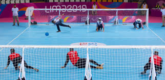

Single player defense, 1:1 game, free lanes, multi player.
First prototype uses binaural recordings of throws.
Over 125 throws in different directions.
Various types of throws: rolling, bouncing, slow, fast.
Recording at the throw and defense positions.
Vary ball speed and defense width to create levels.
Status and next steps: Prototype for the single-player defense game and 1:1 recordings are done. Next: synthetic binaural rendering for free lanes and multiplayer, and research to quantify localization accuracy and time, calibration, experience and vision effects, and synthetic versus real recordings.

02
Sound source localization training
A game loop can turn listening into measurable practice
Value
Better localization of sound can support everyday confidence for children and adults with low vision.
Users
Children and adults with low vision, goal ball players, gamers, mobility training.
Deployment
Schools, phones, PCs. First browser-based app for phone and PC.
Approach
Research suggests goal ball can help train sound source localization. Goal ball-inspired training with performance tracked over time.
Details
Research suggests goal ball can help train sound source localization.
Goal ball-inspired training for acoustic source localization.
Track performance over time.
01
LISTEN
Hear a binaural throw
02
LOCATE
Identify direction + speed
03
DEFEND
Respond inside the game
04
TRACK
Measure progress over time
Status and next steps: Prototype for the single-player defense game and 1:1 recordings are done. Next: measure performance over time with participants, quantify the localization benefits of game play, and deploy in schools and on phone and PC apps.
03
Immersive broadcasting
Experience it like you are there
Value
Highly realistic sound for broadcasting sports games and events.
Users
Children and adults with low vision, and everyone.
Deployment
Sports games, events, and teleconferences.
Extension
Optional coupling with haptics and other devices for low-vision listeners.
01
CAPTURE
Binaural recordings at key positions in real locations
02
COMPOSE
Place virtual sources spatially around the listener
03
EXPERIENCE
Headphone playback with real spatial presence
Details
Use binaural recording and playback for immersive experience.
Place binaural recording systems at key locations.
Allow the listener to choose their location.
Create virtual sources and place them spatially around the listener in the scene using binaural rendering.
Optional extension for low vision listeners by coupling with haptics and other devices.
Status and next steps: Immersive binaural recordings are complete for goal ball games, and a draft architecture document exists for goal ball broadcast. Next: develop virtual source rendering, interfaces, and prototypes, and evaluate performance and listener experience.
04
Binaural soundscapes
Experience new surroundings and get familiar before arrival
Value
Explore new places and improve accessibility through immersive binaural audio: hikes, urban soundscapes, building navigation, museums, travel previews.
Users
Children and adults with low vision, and everyone.
Deployment: offered as a service, tailored to company specific needs.
Details
Team with extensive expertise in ethnographic and user research, inclusive interaction and visual design, accessibility strategy and policy guidance, prototyping and validation.
Subjective evaluations and correlation to objective metrics.
Product evaluation and design guidance.
Study design, execution, and data analysis/statistics.